We now turn to the Basic Variable-Endpoint Control Problem. In this case there
is an additional statement to be proved, which is
the transversality
condition (4.3). In
Section 4.2.6 we had that the terminal cone
 was separated from the ray
was separated from the ray  ; the reason for this was that
hitting a point on
; the reason for this was that
hitting a point on  below
below  contradicted
optimality. When the fixed endpoint
contradicted
optimality. When the fixed endpoint  is replaced by the
surface
is replaced by the
surface  , we would instead have a contradiction with
optimality if we were able to hit a point with a cost lower than
, we would instead have a contradiction with
optimality if we were able to hit a point with a cost lower than
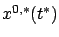
whose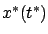
). Let us denote the set of such points by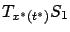
, i.e., the set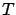
is the shaded ``semi-plane." The subspace , when translated to
This lemma is proved by an appropriate generalization of the
argument we used to prove Lemma 4.1. Suppose that the
statement is not true. Then we can find a point in
which is
contained in  together with some
together with some
 -ball
-ball
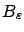
around it. We can write this point as
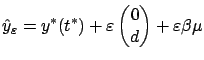
for suitable
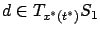
and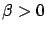
(moving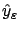
slightly down if necessary, we can ensure that it does not lie on the upper boundary of ). Since belongs to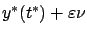
where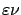
is a first-order terminal state perturbation arising from a temporal and/or spatial control perturbation. We know that the corresponding exact terminal states are of the form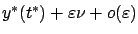
and form a ``warped" version of , which we denote by
This construction remains valid as
 . The ball
is centered at
. The ball
is centered at
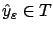
, its radius is
By Lemma 4.2 and the Separating Hyperplane Theorem, there exists a hyperplane
that separates
and  . We denote its normal vector
by (4.28) as before. In view of the
definition (4.37) of
and the fact that
. We denote its normal vector
by (4.28) as before. In view of the
definition (4.37) of
and the fact that
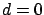
belongs to , the separation property still gives us the inequalities (4.29) and (4.30). Thus all the constructions and conclusions of Sections 4.2.8 and 4.2.9 still apply, and so we know that the first three statements of the maximum principle are true. On the other hand, writing the separation property for vectors in with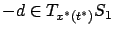
, as is clear from (4.4). This fact and (4.38) imply that actually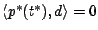
for all , which is precisely the desired transversality condition (4.3). Figure 4.14 depicts
Note that in the special case when
 (a free-time, free-endpoint problem),
the hyperplane must separate
(a free-time, free-endpoint problem),
the hyperplane must separate  from the entire
from the entire
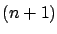
-dimensional half-space that lies below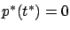
. This is consistent with (4.3) because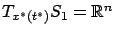
in this case.